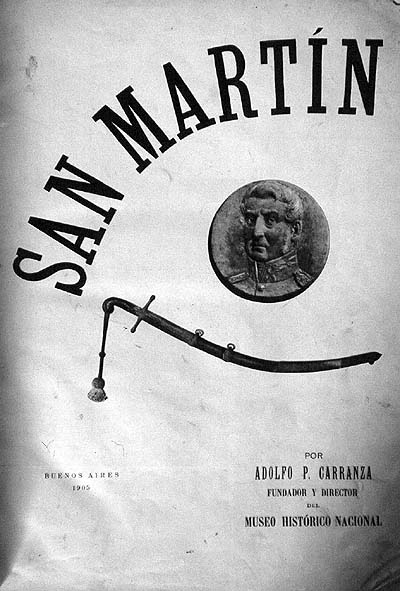

|
|  |
|
Adolfo P. Carranza, cover illustration for San Martín
|
If monumental historical genres such as battle paintings constructed a narrative of national origins in terms of a violent and passionate wielding of male bodies into a collective force, historical biography supplied the complementary myths of heroic founding fathers, in whose 'genius' and 'virtue' these masculine and aggressive qualities of the nation could be emblematically embodied. At the same time, this individualisation of the history of independence –exemplified in Argentina in Bartolomé Mitre's biographies Manuel Belgrano (1876-77) and José de San Martín (1887-90)– also served to contain and exclude alternative, revolutionary readings of independence as a collective uprising, attributing the succesful 'liberation' from colonial rule to a single, larger-than-life figure of authority: the Libertador. Mitre's personalising narrative of independence eventually inspired the organisation of Argentina's National Historical Museum in 1889, which focused its collecting activities almost exclusively on objects referring to San Martín's Andean campaigns (and, on a minor scale, the military operations of other próceres). In 1905, the Museum's director Adolfo P.Carranza published a lavish illustrated volume to document the 'reliquias sanmartinianas' in possession of his institution, as well as the various monuments of the 'Gran Capitán' that had been inaugurated all over Argentina over the previous decade.
|